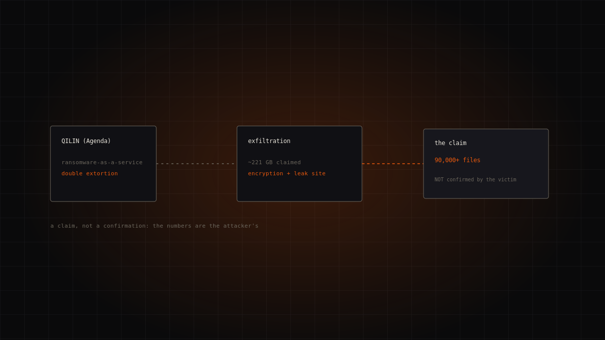
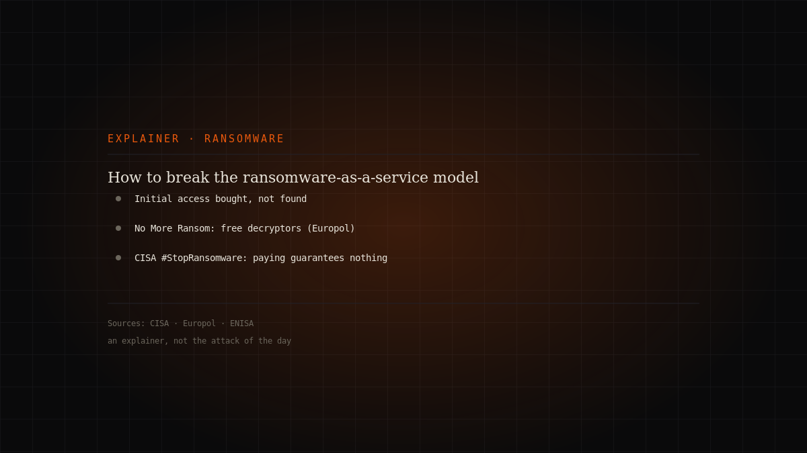
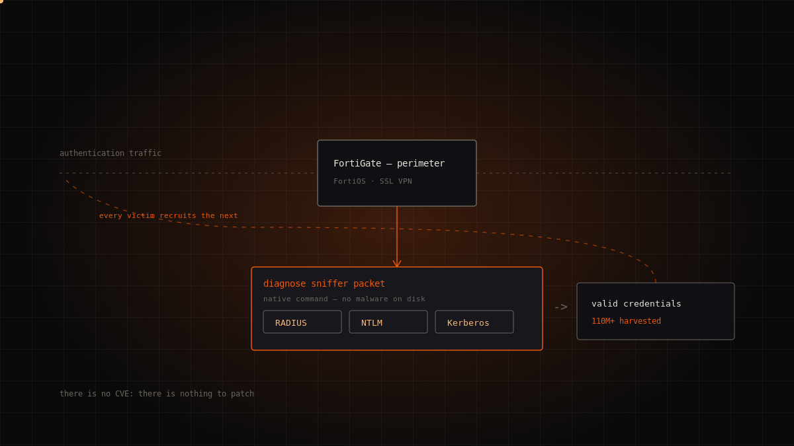
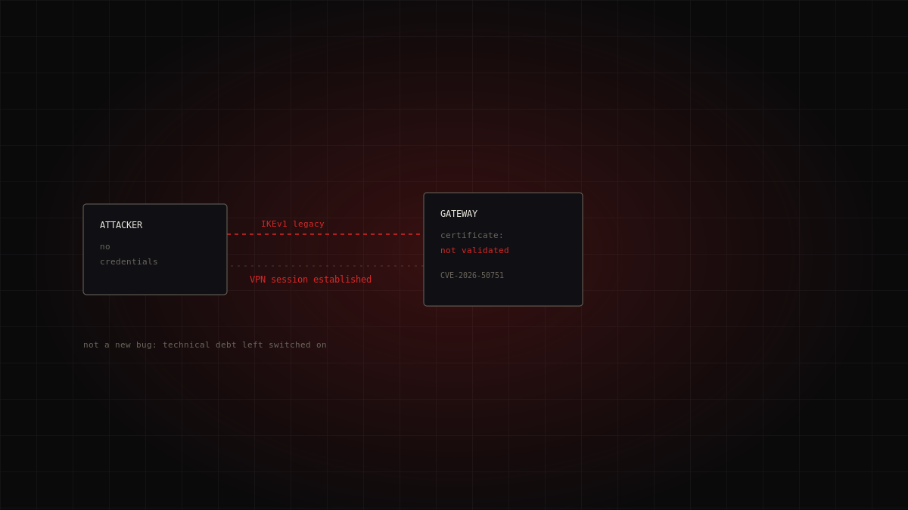
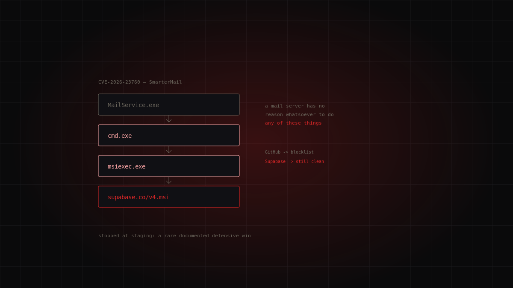
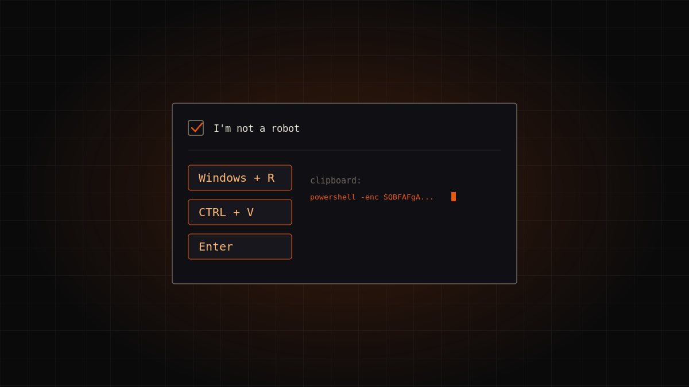

Topic · Threats
Ransomware
The most profitable attack model of the decade: how it works, and what to do (and not do).

Dossiers in this section
6 dossiersQilin claims Danone: what the source says, and what remains to be verified
The Qilin ransomware group listed Danone on its leak site, claiming it stole roughly 221 GB of data and publishing more than 90,000 files. The claim, …
Qilin (Agenda) — leak-site claim, not confirmed by the victim · high
Continue reading →
How to break the ransomware-as-a-service model: what the official sources actually say
Ransomware today is a service industry, not a lone wolf: operators who rent the malware, affiliates who strike, brokers who sell the initial access. T…
Editorial explainer · official sources · high
Continue reading →
FortiBleed: there is no patch, because there is no vulnerability
Roughly half of all internet-facing Fortinet firewalls have their admin credentials in the hands of an access broker. There is no CVE to patch: there …
Russian-speaking Initial Access Broker (unconfirmed) · high
Continue reading →
Qilin and the Interest on Technical Debt: Logging Into a VPN Without a Password
A logic flaw in certificate validation during the IKEv1 key exchange let attackers open an authenticated Check Point VPN session without knowing any p…
Qilin · critical
Continue reading →
Two Attackers, One Network: Storm-2603 and the End of the Single Intrusion
Storm-2603 abuses an authentication bypass in SmarterMail to install Velociraptor as a C2 and stage Warlock ransomware. But the detail that matters su…
Storm-2603 · critical
Continue reading →
Interlock: the ransomware that walks in the front door
Interlock flipped the ransomware script: no phishing, no breached VPN. The victim visits a legitimate compromised site, sees a fake CAPTCHA, and paste…
Interlock · high
Continue reading →The topic in brief
What it is and how it works
Ransomware is malware that locks devices or encrypts files, demanding a ransom to restore access. The model has evolved into double extortion: before encrypting, attackers exfiltrate the data and threaten to publish it. Paying does not guarantee you get the data back and it feeds the market: the shared recommendation from authorities is don't pay.
Prevention works
The most effective defence is well known and unglamorous: verified offline backups, timely patching, multi-factor authentication, reduced internet exposure. The No More Ransom project — an initiative of Europol and the Dutch police with industry — offers a free repository of decryption tools and prevention guidance. For some families a decryptor already exists: before despairing, check.
If you're hit
Isolate systems, preserve evidence, notify the competent authorities (in Italy, CSIRT Italia) and engage an incident responder. The rush to “get everything back up” is the enemy of remediation: a hasty restore onto a still-compromised environment brings the attacker back in.
FAQ
- Should I pay the ransom?
- No. Authorities advise against paying: it doesn't guarantee data recovery and confirms to attackers that the model works.
- Are there free decryption tools?
- Yes, for several ransomware families. Europol's No More Ransom project collects free decryptors and should be checked before any other decision.